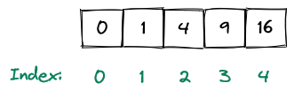

Chapter 5. Iterables#
An iterable is a data structure that allows you to store multiple items in a single variable. Put more formally, an iterable object is capable of returning its members one after another.
You already saw an important iterable - the string. There are many more iterables in Python - but in this chapter we will only concern ourselves with the most important ones - lists, ranges, tuples and dictionaries. The first three (i.e. lists, ranges and tuples) are special iterables called sequences. Sequences are iterables which support access using a numerical index (we will see what this means in a second).
Lists#
Probably the most important iterable in Python is the list. Lists are mutable sequences, i.e. sequences whose contents can be changed. You can create a list using square brackets []. Individual list items have to be separated with commas:
squares = [0, 1, 4, 9, 16]
squares
[0, 1, 4, 9, 16]
type(squares)
list
Every item in a list can be accessed by its index:

Note that indices start with 0 and not with 1. Therefore, if you want to access the first item of a list, you need to access the item with index 0. This means that in the case of the squares list the item with index 1 is 1, the item with index 2 is 4, the item with index 3 is 9 etc.
You can access an item of a list by its index using the square bracket notation. For example, this how you would access the item of the squares list at index 2:
squares[2]
4
Let’s access every item in the squares list using its index:
squares[0]
0
squares[1]
1
squares[2]
4
squares[3]
9
squares[4]
16
What happens if we try to access the item by an index that doesn’t exist? We get an IndexError:
squares[5]
---------------------------------------------------------------------------
IndexError Traceback (most recent call last)
Cell In[10], line 1
----> 1 squares[5]
IndexError: list index out of range
Generally speaking, the indices of the list range from 0 until the length of the list minus 1.
Speaking of the length of the list - we can get it using the len function:
len(squares)
5
We can also obtain multiple items of a list using the so-called slice notation. Instead of specifying a single index, you can specify a start and stop index separated by the colon symbol :. This returns all the items from index start to the index stop - 1 (i.e. the stop index is excluded).
For example, if we want to get a list containing the items of the squares list at the indices 2, 3 and 4 we would specify a slice with start being 2 and stop being 5.
squares[2:5]
[4, 9, 16]
The reason stop is excluded is because the length of the returned list should be equal to stop - start:
start = 2
stop = 5
len(squares[start:stop]) == stop - start
True
If we specify a stop index that is outside the list, slicing still works. All indices beyond the stop index are simply ignored:
squares[2:27]
[4, 9, 16]
We can omit the start index if we want to start at the beginning of the list:
squares[:3]
[0, 1, 4]
We can omit the stop index as well if we want to get all elements until the end of the list:
squares[3:]
[9, 16]
Remember how we said that lists are mutable? Using the square bracket notation we can not just access the item of a list, but also change it.
For example this is how we could change the item at index 2 to have a value of 5:
squares[2] = 5
This is how the new list looks like:
squares
[0, 1, 5, 9, 16]
Since the square of 2 is 4 and not 5 let us quickly change it back before anyone notices:
squares[2] = 4
squares
[0, 1, 4, 9, 16]
Lists are objects and therefore have a whole bunch of useful methods. For example we can append a value to the end of a list using the appropriately named append method:
squares.append(25)
squares
[0, 1, 4, 9, 16, 25]
We can insert a value at any place in the list using the insert method. This method takes the index to insert the value at and the value to be inserted.
Here is how we would insert the the value 7 at index 3 of the squares list:
squares.insert(3, 7)
squares
[0, 1, 4, 7, 9, 16, 25]
Finally, you can delete an index using the pop method. This method also returns the deleted item:
value = squares.pop(3)
squares
[0, 1, 4, 9, 16, 25]
value
7
These methods allow us to create lists, update items in lists, insert items in lists and remove items from lists.
Additionally, we can concatenate lists using the + operator:
[1, 2, 3] + [4, 5, 6]
[1, 2, 3, 4, 5, 6]
We can also extend lists in place using the += operator or the extend method:
list1 = [1, 2, 3]
list1 += [4, 5, 6]
list1
[1, 2, 3, 4, 5, 6]
list2 = [1, 2, 3]
list2.extend([4, 5, 6])
list2
[1, 2, 3, 4, 5, 6]
Ranges#
A range represents an immutable (i.e. unchangeable) sequence of numbers. You can construct a range using the built-in range function. This takes a start argument and an stop argument which indicate the boundaries of the range:
my_range = range(0, 4)
type(my_range)
range
my_range
range(0, 4)
my_range.start
0
my_range.stop
4
We can convert a range to a list using the built-in list function:
list(range(0, 4))
[0, 1, 2, 3]
Note that the range goes from start to stop - 1 (this is similar to slices). Therefore in this case the number 4 is not part of the resulting list.
The reasoning behind this is exactly the same as with slices. We want my_range.stop - my_range.start to be equal to the length of my_range:
len(my_range) == my_range.stop - my_range.start
True
It is also possible to call range with a single value, in which case that value is interpreted as the stop value and the start value is set to 0:
range(5)
range(0, 5)
list(range(5))
[0, 1, 2, 3, 4]
Tuples#
Tuples are immutable sequences. We can construct tuples in a similar way as lists, just without the square brackets []:
color = 0, 127, 0
type(color)
tuple
Unlike ranges, tuples don’t need to consist of numbers and generally don’t need to hold values of the same data type:
my_tuple = 42, "flunky"
my_tuple
(42, 'flunky')
Note that technically lists can also hold values of different data types, however usually lists are used to hold values of the same data type.
We should point out that we can add parentheses () around the tuple items for better readability:
my_tuple = (42, "flunky")
my_tuple
(42, 'flunky')
Sometimes the parentheses are necessary, for example when we try to create an empty tuple:
empty_tuple = ()
type(empty_tuple)
tuple
empty_tuple
()
The parentheses are also necessary if we want to pass a tuple as an argument to a function:
def print_tuple(my_tuple):
print(my_tuple)
print_tuple((3, 2))
(3, 2)
If we try to leave the parentheses out, Python will think that we are passing two arguments to the function and yell at us:
print_tuple(3, 2)
---------------------------------------------------------------------------
TypeError Traceback (most recent call last)
Cell In[53], line 1
----> 1 print_tuple(3, 2)
TypeError: print_tuple() takes 1 positional argument but 2 were given
Just like with lists, we can access tuple elements by index:
color[1]
127
We can also get the length of a tuple using the len function:
len(color)
3
However because tuples are immutable, we cannot change their values:
color[1] = 100
---------------------------------------------------------------------------
TypeError Traceback (most recent call last)
Cell In[56], line 1
----> 1 color[1] = 100
TypeError: 'tuple' object does not support item assignment
While tuples are useful, they are often overused. A very tempting thing to do is to store data in tuples instead of objects. For example, you could do this:
ball = 10, 8
Here the first element of the tuple (ball[0]) represents the position of the ball. The second element of the tuple (ball[1]) represents the speed of the ball:
# Get the position of the ball
ball[0]
10
# Get the speed of the ball
ball[1]
8
This is a bad idea. The reason for that is quite simple - representing complex data structures with tuples makes our code less readable. It is totally unclear what ball[0] is supposed to be if we just look at the respective line and don’t know the structure of the tuple. However the meaning of ball.pos is totally clear even if we have no idea what else a ball can do - ball.pos gives us the position of the ball.
Generally speaking you should only use tuples for very simple data which contains values that always belong together. Standard examples for valid tuple uses are things like RGB colors, video resolutions and positions:
rgb_color = 0, 127, 0 # the color green
video_resolution = 1280, 720 # the 720p video resolution
position = 24, 25 # a position in 2D
Remember how we returned multiple values from functions in chapter 3? Well, that was a lie. In reality we returned a single value that happened to be a tuple:
def get_color():
return 0, 127, 0
my_color = get_color()
my_color
(0, 127, 0)
type(my_color)
tuple
However because we can unpack tuples, we were able to pretend that we returned multiple values from a function:
r, g, b = my_color
r
0
g
127
b
0
This is what allowed us to write things like:
r, g, b = get_color()
Dictionaries#
Dictionaries are data structures that map (immutable) keys to values.
We can define a dictionary using the {} bracket notation. The key-value pairs must be separated with commas. For example, here is how we could define a dictionary which maps countries to their capitals:
capitals = {"Germany": "Berlin", "France": "Paris", "Spain": "Madrid"}
capitals
{'Germany': 'Berlin', 'France': 'Paris', 'Spain': 'Madrid'}
Another example is a dictionary which maps players to their ratings:
ratings = {"Alex": 1500, "Michael": 1400, "John": 1000, "Max": 1200}
Unlike with lists, we don’t access dictionary values by indexes. Instead we access the values by their keys.
For example if we want to access the capital of Germany, we provide the key "Germany" to our dictionary:
capitals["Germany"]
'Berlin'
We could access the rating of "John" in a similar manner:
ratings["John"]
1000
Just like with lists, we can add values to a dictionary. To do that, we need to specify both the key and the value of the new key-value pair:
capitals["Italy"] = "Rome"
capitals
{'Germany': 'Berlin', 'France': 'Paris', 'Spain': 'Madrid', 'Italy': 'Rome'}
We can change the value of an existing key using the same notation. This will overwrite the current value for that key:
capitals["Germany"] = "Munich"
capitals["Germany"]
'Munich'
Let’s quickly change it back before Berlin gets mad:
capitals["Germany"] = "Berlin"
We can delete a value by its key using the pop method. This method will also return the deleted value:
value = capitals.pop("Italy")
capitals
{'Germany': 'Berlin', 'France': 'Paris', 'Spain': 'Madrid'}
value
'Rome'
Dictionaries are useful if we need to store values and access them using other values. Examples of good uses of dictionaries include ratings of players, capitals of countries, ages of people etc.